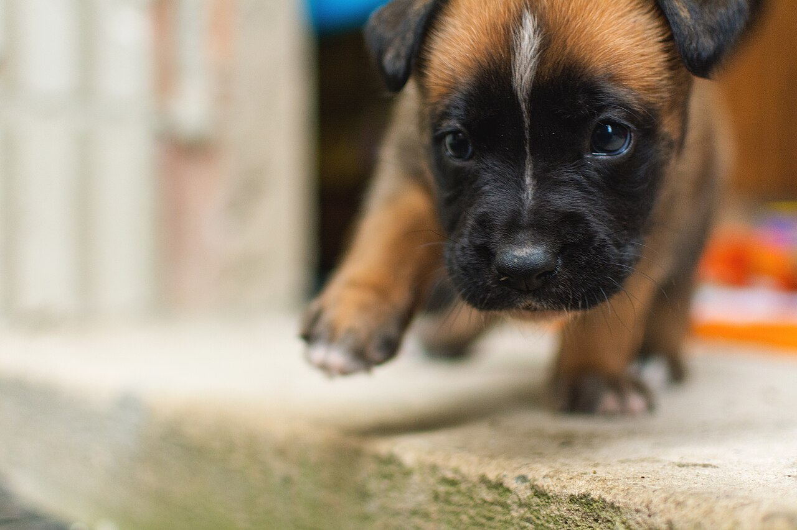
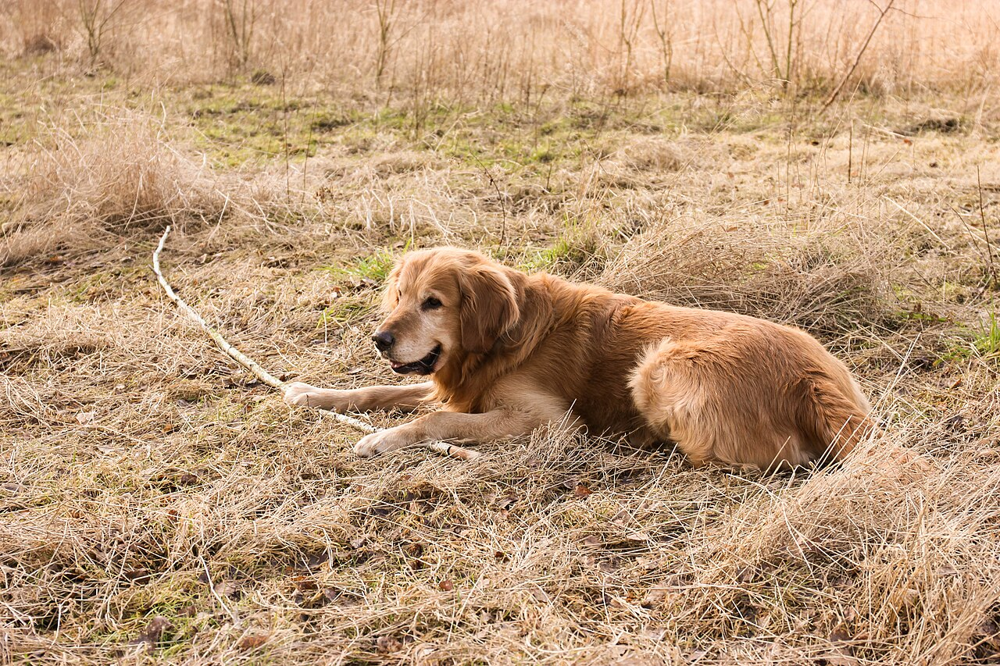
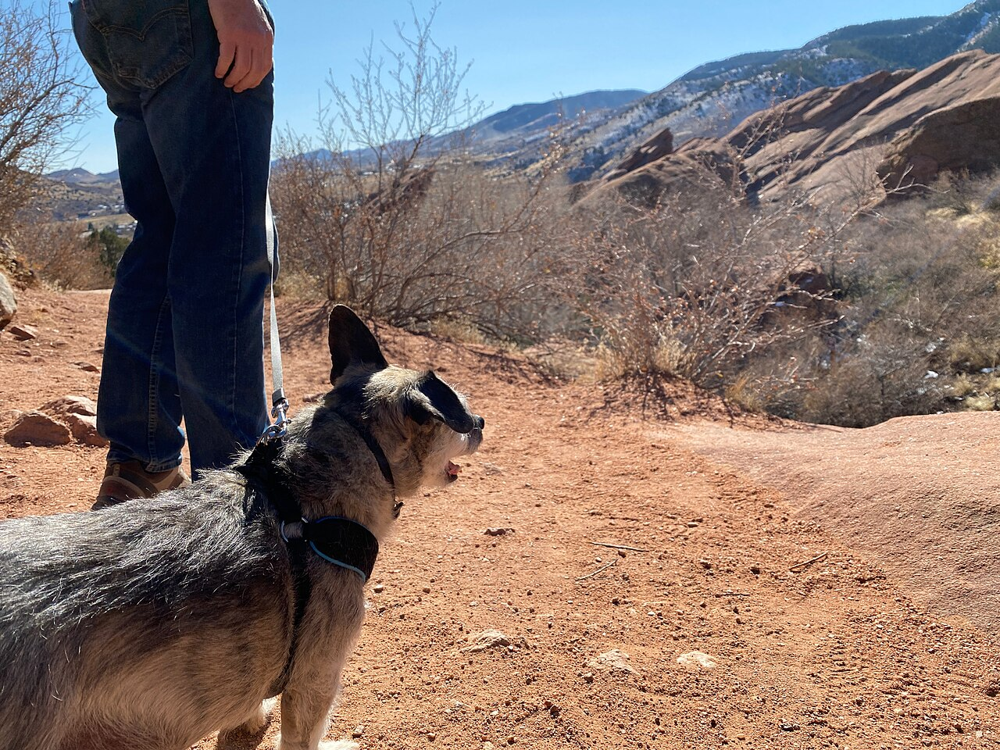
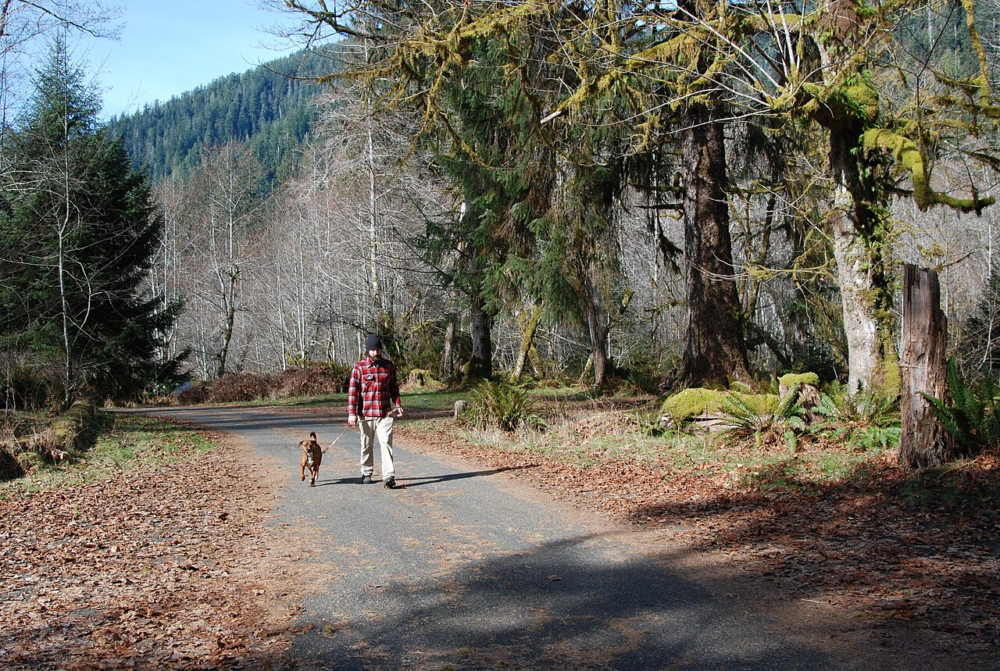

京都府城陽市のドッグサロン
犬のお手入れは、近所のサロンで。
犬と歩いて、近くのサロンへ。
Dog Salon LuLuは、京都府城陽市平川横道にあるドッグサロンです。ご相談は、お電話またはInstagramからどうぞ。

- 住所京都府城陽市平川横道48-3
- 電話080-9303-8777
- 営業時間準備中(お問い合わせください)
犬と歩く道のり
写真を横にたどると、散歩のような道のりが続きます。(横スクロール/矢印キーで移動できます)




写真は全てイメージです。
お店のこと
Dog Salon LuLuは、京都府城陽市のドッグサロンです。ご相談はお電話、またはInstagramのメッセージからお気軽にどうぞ。営業時間や詳しいご案内は、お問い合わせください。
実際のお客様の声ではない、イメージ例を載せています。